#3133 Schieß oder stirb!
Alternativ: Gun for a Coward
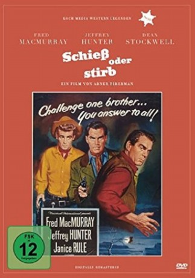 
 IMDB-Wertung: 6.1 / 10
IMDB-Wertung: 6.1 / 10  Metascore: 0
Metascore: 0 
Seine Brüder Will (Fred MacMurray) und Harry halten den sensiblen Bless (Jeffrey Hunter) für ein Muttersöhnchen. Doch als es drauf ankommt, steht auch der seinen Mann… Mit seinem James-Dean-inspirierten Helden zählt der Film zu den Teenie-Western der 50er Jahre. Eine der wenigen Regiearbeiten von Abner Biberman, dem Schauspiellehrer von Marilyn Monroe und Tony Curtis.
Jahr: 1957
Dauer: 88 Minuten
FSK: 12
Land: USA Studio: Universal InternationalTonspuren:
Untertitel:
Auflösung: 1080p (1920x816) Größe: 5386 MB
Genre: Western
Regisseur: Abner Biberman
Drehbuch: R. Wright Campbell
Soundtrack: Irving Gertz, Henry Russell, Frank Skinner
Darsteller:
- 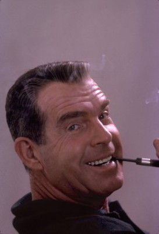 Fred MacMurray als Will Keough
 Jeffrey Hunter als Bless Keough
Jeffrey Hunter als Bless Keough- Janice Rule als Aud Niven
 Chill Wills als Loving
Chill Wills als Loving Dean Stockwell als Hade Keough
Dean Stockwell als Hade Keough- Betty Lynn als Claire
 Iron Eyes Cody als Chief
Iron Eyes Cody als Chief- 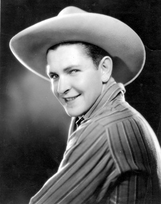 Bob Steele als Durkee
- 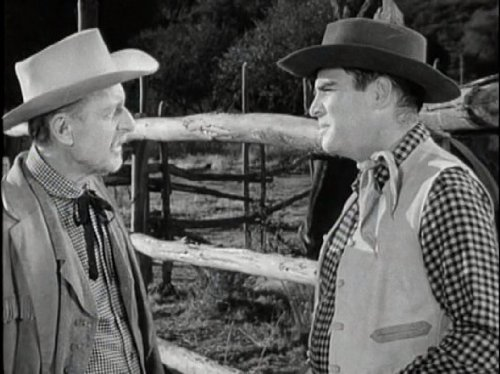 Stanley Andrews als Old Nester , uncredited
- Kevin Corcoran als Deke , uncredited
- Josephine Hutchinson als Mrs. Keough
- Robert F. Hoy als Danny
- Jane Howard als Marie
- Marjorie Stapp als Rose
- 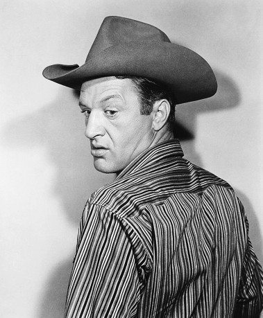 John Larch als Stringer
 Paul Birch als Andy Niven
Paul Birch als Andy Niven- Frances Morris als Mrs. Anderson
- Emile Avery als Cowhand , uncredited
- John Barton als Barfly , uncredited
 Bob Burns als Fight Spectator , uncredited
Bob Burns als Fight Spectator , uncredited- Forest Burns als Cowhand , uncredited
- Penny Carpenter als Lissa , uncredited
 Steve Carruthers als Barfly , uncredited
Steve Carruthers als Barfly , uncredited- Fred Carson als Fight Spectator , uncredited
- Billy Dix als Cowhand , uncredited
- Watson Downs als Preacher , uncredited
- 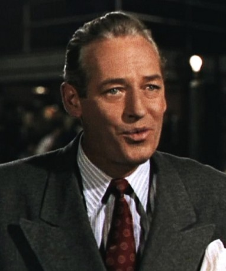 James Gonzalez als Party Guest , uncredited
- Stuart Hall als Party Guest , uncredited
- Joe Haworth als Young Nester , uncredited
 Chuck Hayward als Nester , uncredited
Chuck Hayward als Nester , uncredited- Leroy Johnson als Bit Role , uncredited
- 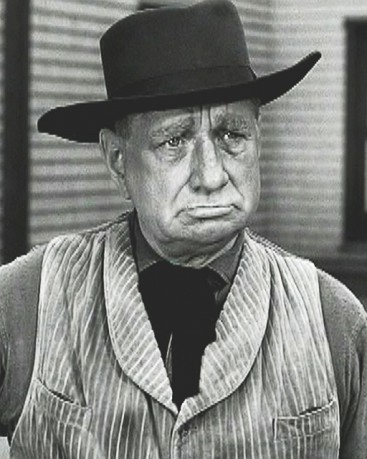 Paul Kruger als Fight Spectator , uncredited
- 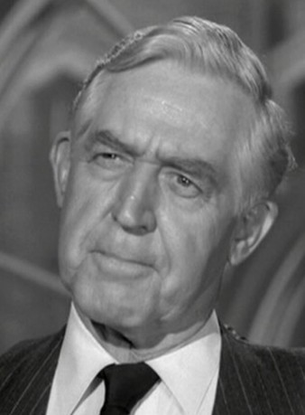 Nolan Leary als Doctor , uncredited
- Jack Lilley als Cowhand , uncredited
- Fred McDougall als Fight Spectator , uncredited
- 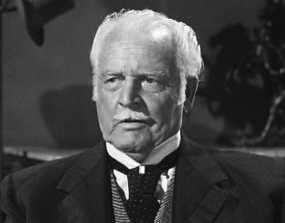 Forbes Murray als Barfly , uncredited
 William H. O'Brien als Bartender , uncredited
William H. O'Brien als Bartender , uncredited Regis Parton als Bandit , uncredited
Regis Parton als Bandit , uncredited- 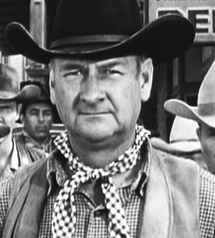 Joe Phillips als Fight Spectator , uncredited
- Jose Portugal als Party Guest , uncredited
- Dick Rich als Bartender , uncredited
- 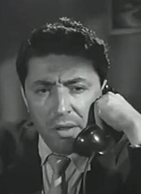 Ric Roman als Bandit , uncredited
- 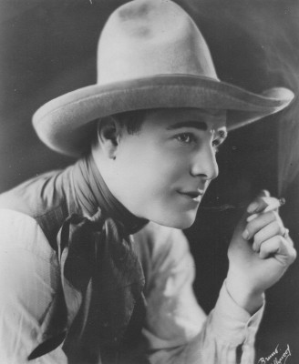 Buddy Roosevelt als Townsman at Dance , uncredited
- Sherman Sanders als Square Dance Caller , uncredited
- 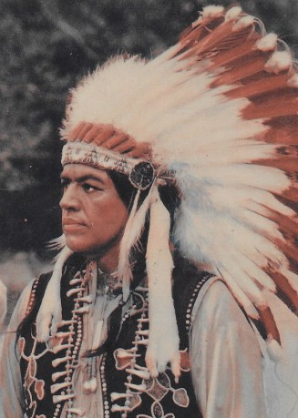 Charles Soldani als Indian , uncredited
 George Sowards als Party Guest , uncredited
George Sowards als Party Guest , uncredited- Will J. White als Cowhand , uncredited
Datei: X:\HD-Western-1900-1959\Schieß oder stirb! (1957, FSK12, 1920x816).mkv seit 02.02.2016
Festplatte: HD Eastern+Western
 Es gibt insgesamt 98 Filme in der Gruppe 'HD-Western-1900-1959'
Es gibt insgesamt 98 Filme in der Gruppe 'HD-Western-1900-1959'